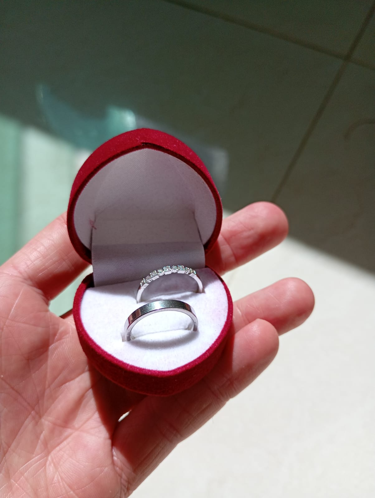
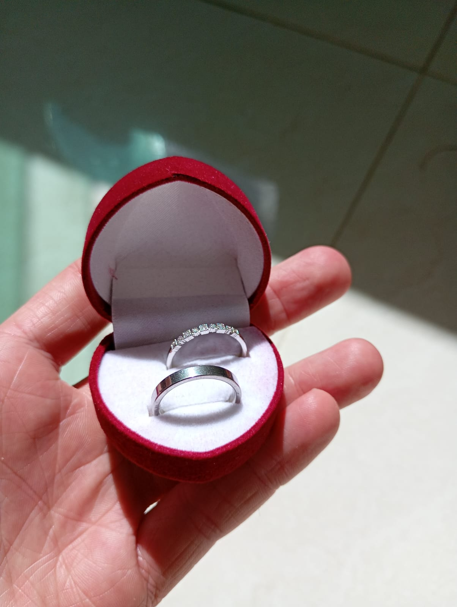
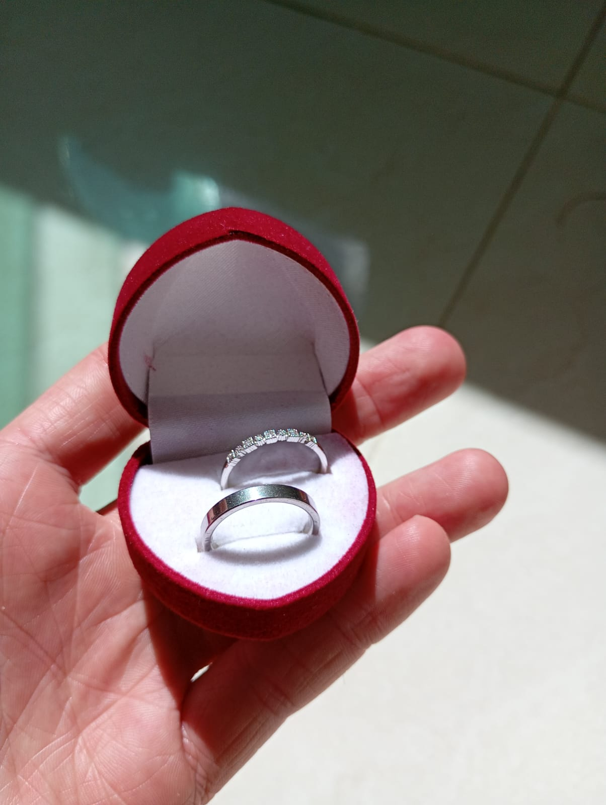
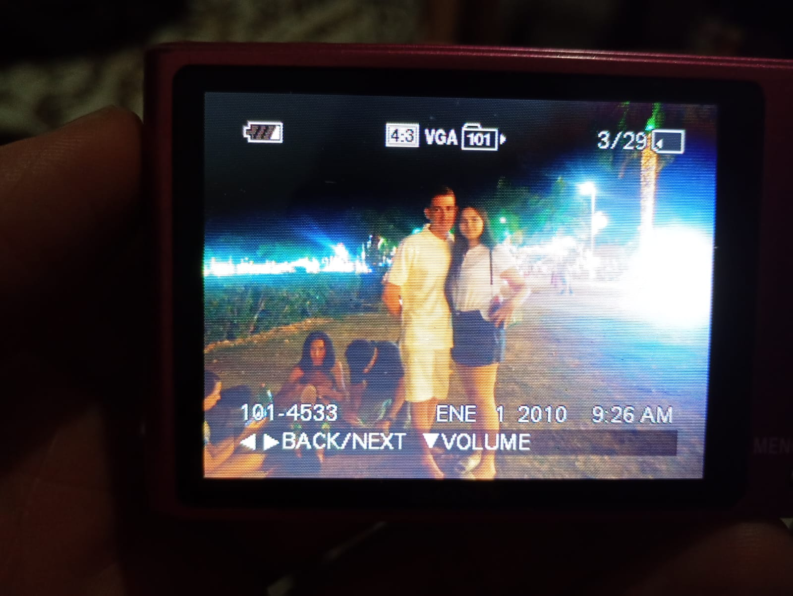

Eu sei que talvez não seja a melhor data do mundo (eu também não queria que fosse nessa data, inicialmente eu sempre quis que fosse no dia 10 de setembro) mas é pq tivermos momentos ruins e eu achei que já tinha se passado tempo demais e se eu não falasse que queria namorar com tu talvez tu pensasse em ir embora (parece loucura pensando nisso agora) e a gente já tava conversando desde junho -5 meses- KKKKKKKKKKKK

No mesmo dia tu tinha ido lá pra casa, e eu até tinha pego a aliança e pensei em pedir pra namorar com tu quando tu entrasse no meu quarto, mas depois eu pensei que era paia e não fiz nada (grande surpresa eu não fazer nada)
Fora tudo isso, também teve aquela época que a gente quase deu errado e que influencia nesse tempo todo. Eu até tinha te chamado pra sair antes do 2 de novembro, mas nunca dava certo (seja pq tu não queria, ou pq tinha algum imprevisto pra tu sair, tipo o ENEM que me atrapalhou em 2 semanas)
Eu não sei o sentimento que você tem por esse dia, mas eu espero que não tenha raiva de mim por não ter sido tão especial para nós dois, o dia que deveria ser o mais importante eu não me planejei direito e saiu como se fosse um dia normal, novamente, desculpa. Mas tirando essas partes, até que foi um dia legal, nós fomos para a lagoa e ficamos conversando até que muito (época em que a gente ainda saia junto)
Pessoalmente eu gosto desse dia, foi até que bem divertido e a gente passou a tarde/noite inteira juntos. Tiramos algumas fotos, comemos bolos (por mais que aquele dia tenha tido coisas para mim, eu só pensava em te agradar, e no fim eu nem sabia que iria ter aquele bolo pq foi uma surpresa). Também marcamos uma árvore com nossas inicais e agora vai ficar lá pra sempre, igual nos filmes.
Pra ser sincero o dia em que eu queria ter te pedido em namoro foi no dia que tiramos aquelas foto no shopping, no dia 12 de outubro. O motivo? um dia antes tu tinha acordado cedo pra ir comigo comprar o celular novo pq eu tinha sido roubado, tu tinha demonstrado que estava comigo e se preocupava, tinha me dito que ficou muito triste dias antes e que queria saber como eu estava e tudo mais. Tudo isso tinha despertado ainda mais o meu amor por você (a gente tava na nossa melhor época) e não tem um dia em que eu não pense no quanto eu fui idiota e imbencil por ter deixado essa oportunidade passar (se você voltar a página vai ver que existe a opção do dia 12).
Foi anoitecendo e chegou o momento em que a gente teria que voltar pra casa, sentamos no banco e eu menti dizendo que chamei o uber pra poder ter mais um momento sozinho com tu, fomos para uma arvore e até que dermos uns beijinhos kkkkkkkkkkkkkk eu tava me sentindo tão bem, tão confortavél perto de você naquele momento que eu não conseguia mais segurar o desejo que eu tinha, só saiu de dentro de mim e eu pedi pra namorar com tu (eu não sei oq rolou mas só saiu) e depois formos pra casa. Olhando hoje em dia até que esse dia foi bem memorável mesmo né, te amo beijos.
e foi tudo isso que aconteceu no dia 2, obrigado por ter paciencia comigo e pra ler tudo isso e feliz 3 meses de namoro